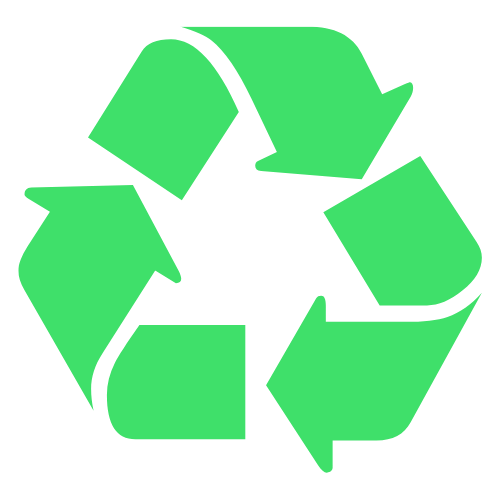

Reduce.
Reuse.
Recycle.

Everyone can contribute to a better future with a few small, simple changes.
Carbon Count
General info content text will go here
Click here for more info (add link to other page)Get Inspired
Climate Change
Collectively, the past eight years have been the warmest since modern recordkeeping began.
Pollution
<<<<<<< HEADGeneral info content text will go here
Mass Extinction
There are over 22,000 species of plant and animal that are threatened with extinction.
Waste Disposal
<<<<<<< HEADGeneral info content text will go here
Deforestation
Humans are destroying one of Earth's most important natural resources: forests.
Ocean Acidification
Ocean acidification is another consequence of having too much CO2 in the atmosphere.